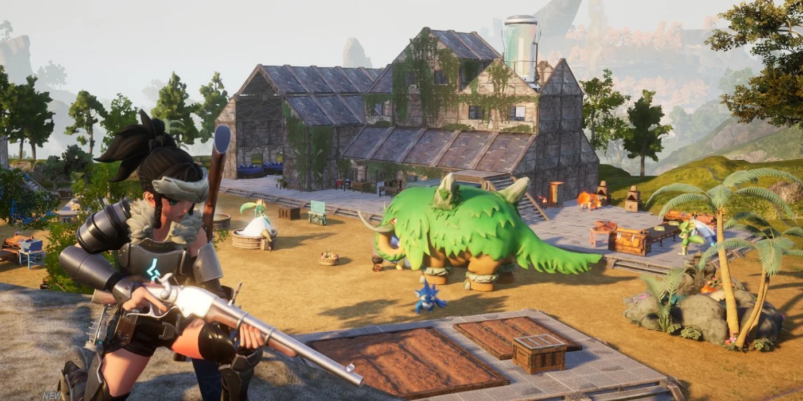
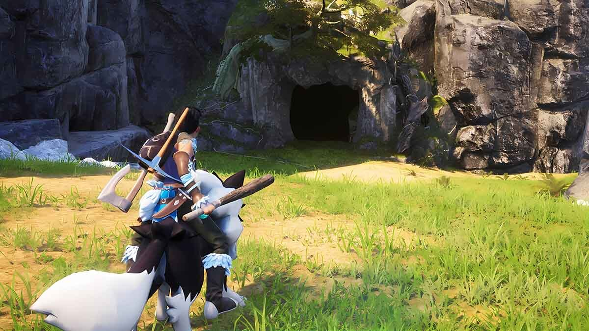
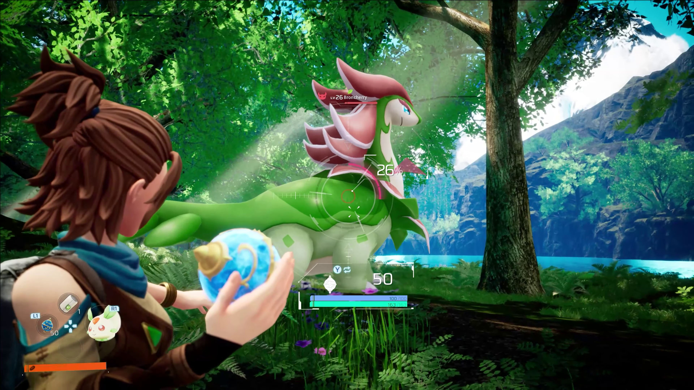

Palworld
Fight, farm, build and work alongside mysterious creatures called "Pals" in this completely new multiplayer, open world survival and crafting game! For more information
| RECENT REVIEWS | Mostly Positive |
| ALL REVIEWS | Very Positive |
| RELEASE DATE | 19 Jan, 2024 |
| DEVELOPER | Pocketpair |
| PUBLISHER | Pocketpair |
Early Access Game
WHAT THE DEVELOPERS HAVE TO SAY:
Why Early Access?
“We believe that to create an exciting and completely new game, it is very important to keep fine-tuning it based on feedback from our players.Palworld is a monster-catching, survival and crafting game, but incorporates a variety of mechanics from other genres in order to provide a completely new experience for everyone. In order to collect feedback on these elements and grow the game into one that everyone can enjoy, we believe that feedback from everyone in the community is necessary. Therefore, we have decided to release Palworld into Early Access.Please lend us your support so that we can make Palworld the best it can be.”
Approximately how long will this game be in Early Access?
“We plan to improve the quality of the game by making various improvements throughout early access for at least one year. During early access, we will update the game based on the roadmap, actively adding content and improving the game systems. Depending on the progress of development, we may consider extending early access or if we are satisfied with the state of the game, officially releasing the game.”
How is the full version planned to differ from the Early Access version?
“We plan to incorporate various additional elements, focusing on adding new content and balance adjustments where needed. The addition of new monsters to further the Pal roster, new areas and dungeons to make exploration even more enjoyable, and the addition of new buildings and items that make the survival elements more pronounced and enjoyable, making the unique Palworld experience even more appealing. We are considering content to target. We are also considering incorporating entirely new game systems based on player feedback and ideas.”
What is the current state of the Early Access version?
“The core systems of the Palworld experience, such as monster catching, battles, exploration, building and crafting, are already complete. We also have more than 100 monsters, a vast open world, over 350 items, and more than 70 types of buildings - enough content to keep you entertained even during early access.”
We also hope that the community will be a great place for players to interact with other players who are enjoying Palworld. We believe that Palworld is a game that the development team and the players will work together to create. Based on discussions within the community, we plan to actively implement content and system improvements that were not planned at the beginning of development but that the players long for.
ABOUT THIS GAME
you can peacefully live alongside mysterious creatures known as Pals or risk your life to drive off a ruthless poaching syndicate. Pals can be used to fight, or they can be made to work on farms or factories. You can even sell them or eat them!
Survival
In a harsh environment where food is scarce and vicious poachers roam, danger waits around every corner. To survive, you must tread carefully and make difficult choices...even if that means eating your own Pals when the time comes.
Mounts & Exploration
Pals can be mounted to traverse the land, sea and sky allowing you to traverse all kinds of environment as you explore the world.

Building Structures
Want to build a pyramid? Put an army of Pals on the job. Don't worry; there are no labor laws for Pals.
Production
Make use of Pals and their skills to make fire, generate electricity, or mine ore so that you can live a life of comfort.
Farming
Some Pals are good at planting seeds, while others are skilled at watering or harvesting crops. Work together with your Pals to create an idyllic farmstead.

Factories & Automation
Letting Pals do the work is the key to automation. Build a factory, place a Pal in it, and they'll keep working as long as they're fed—until they're dead, that is.

Dungeon Exploration
With Pals on your side you can tackle even the most dangerous areas. When the time comes, you might have to sacrifice one to save your skin. They'll protect your life even if it costs their own.
Poaching & Crime
Endangered Pals live in wildlife sanctuaries. Sneak in and capture rare Pals to get rich quick! It's not a crime if you don't get caught, after all.
SYSTEM REQUIREMENTS
MINIMUM:
| OS * | Windows 10 or later (64-Bit) |
| Processor | i5-3570K 3.4 GHz 4 Core |
| Memory | 16 GB RAM |
| Graphics | GeForce GTX 1050 (2GB) |
| Network | Broadband Internet connection |
| Storage | 40 GB available space |
RECOMMENDED:
| OS * | System Windows® 7 / Windows® 8.1 / Windows® 10 64-bit (latest Service Pack) |
| Processor | i9-9900K 3.6 GHz 8 Core |
| Memory | 32 GB RAM |
| Graphics | GeForce RTX 2070 |
| Network | Broadband Internet connection |
| Storage | 40 GB available space |
FEATURES:
- Single-player
- Online PvP
- Online Co-op
- Achievements
- Cross-Platform Multiplayer
- Captions available